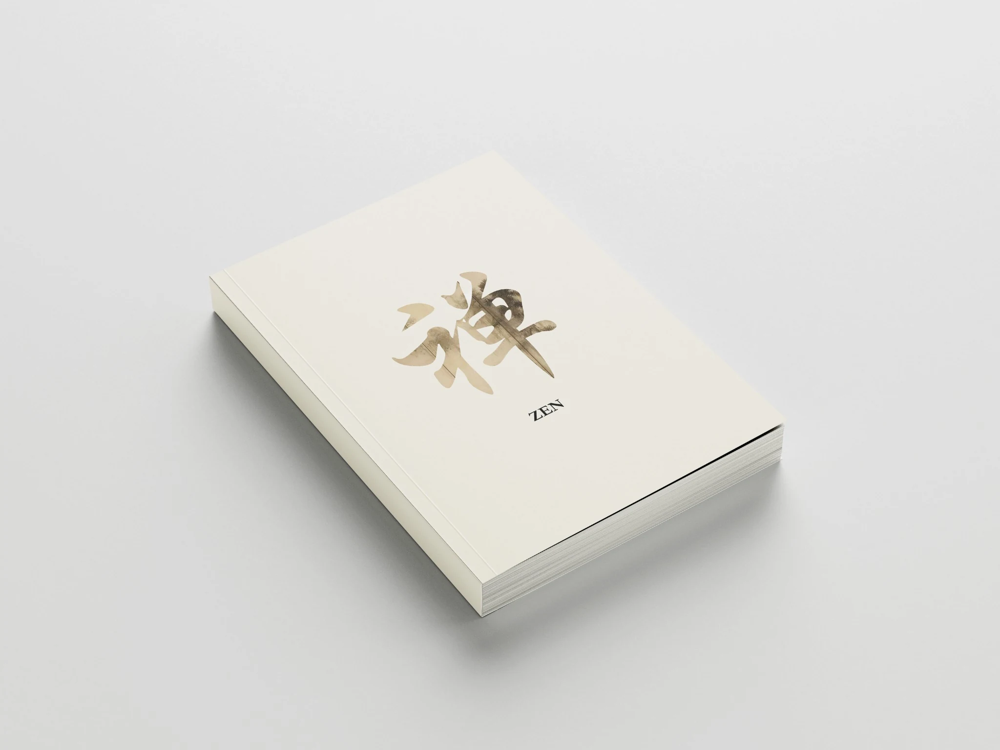
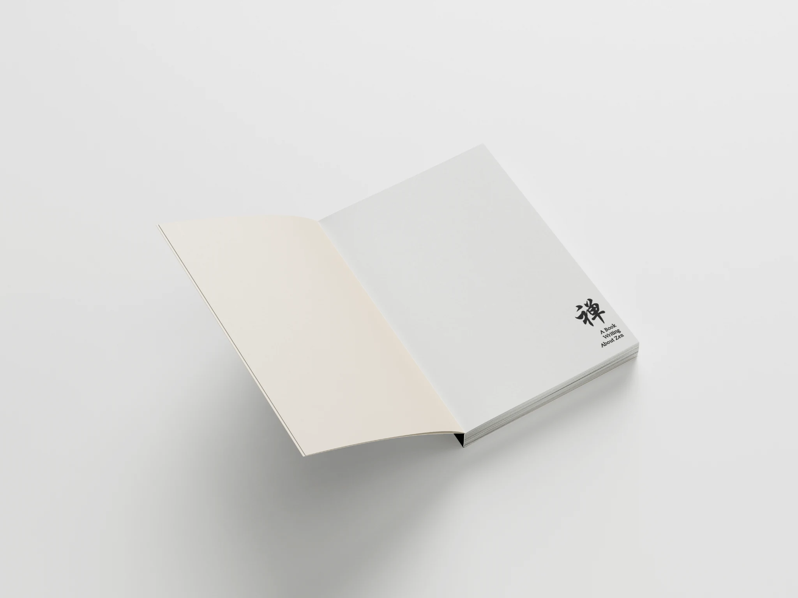
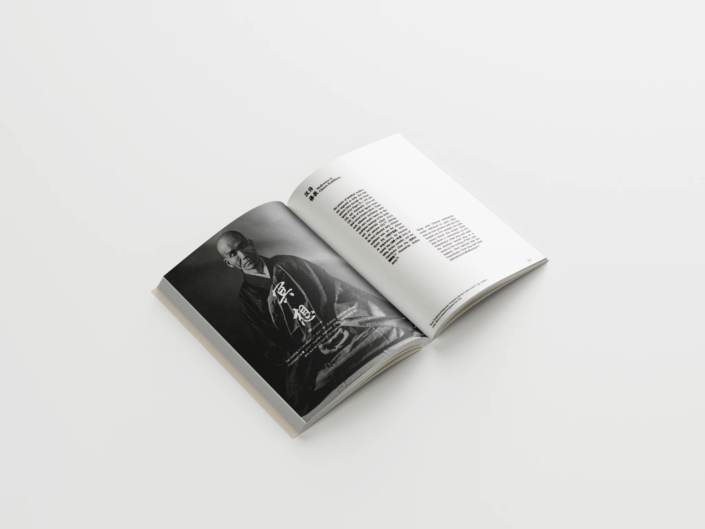
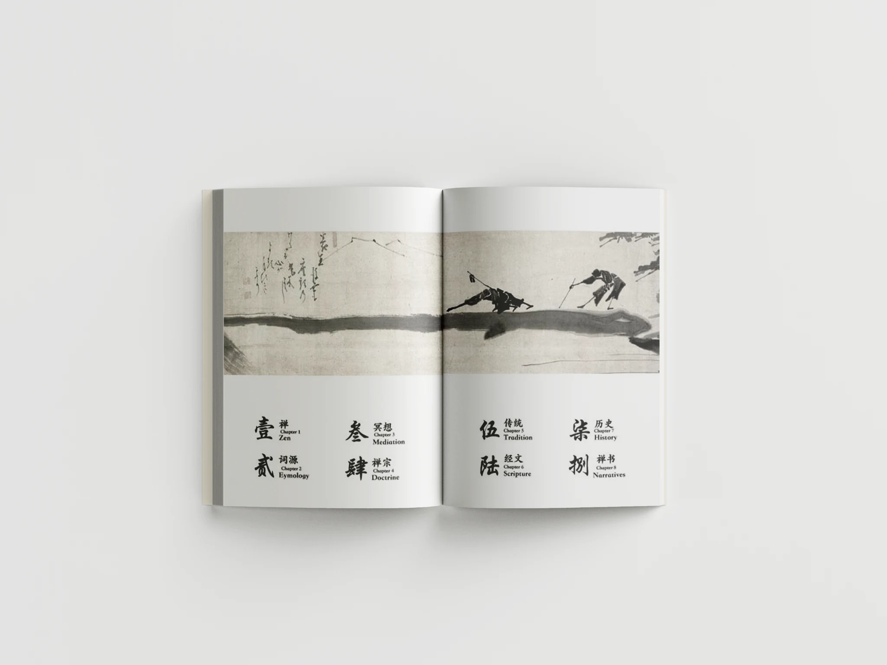
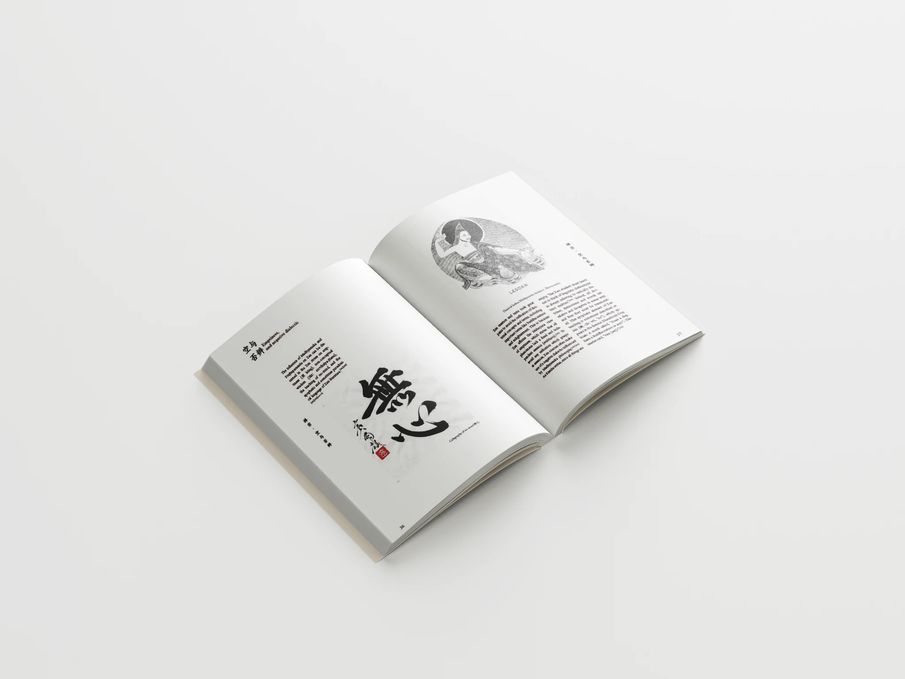

WANG
WANG
← Back to workEDITORIAL DESIGN / 2026
ZEN禅
A bilingual Chinese–English wiki book exploring Zen through typography, image and editorial storytelling.

TYPE
Editorial / Publication Design
LANGUAGES
Chinese & English
FORMAT
Wiki-style book
YEAR
2026
01 / OVERVIEW
An exploration of Zen in print.
ZEN is a bilingual Chinese–English wiki-style book that presents Zen through visual research, typography, and editorial design.
The publication brings together Chinese calligraphy, historical imagery, and a restrained contemporary grid. Generous white space creates room for reflection, while the bilingual structure connects cultural context with accessible reading.
02 / DETAILS
Inside the book.
Five views of the publication, from the cover to its interior visual system.




ZEN / 2026← All projects